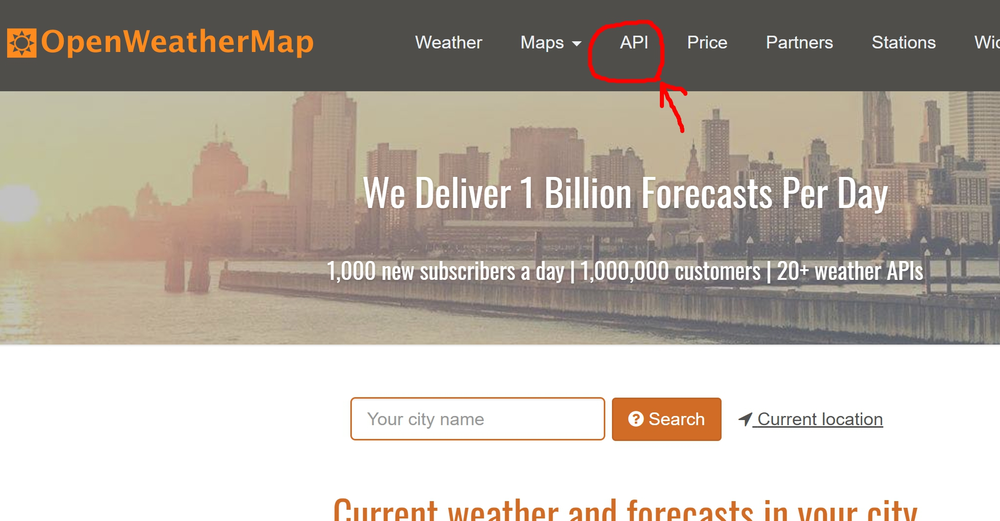
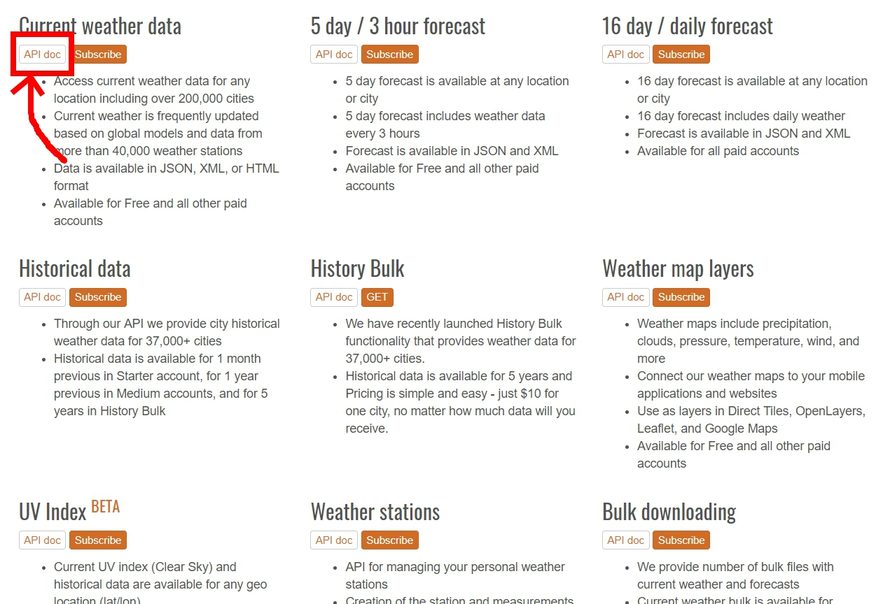
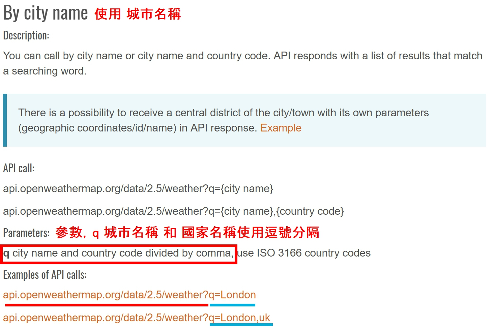
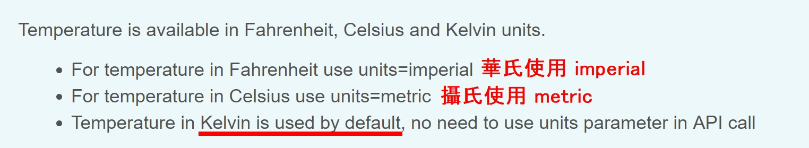
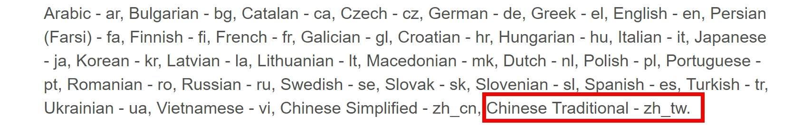

閱讀API doc：
認識API
API（英語：Application Programming Interface）是應用程式介面。
『電腦作業系統（Operating system）』或『程式函式庫』提供給應用程式呼叫使用的程式碼」。
其主要目的是讓應用程式開發人員得以呼叫一組常式功能，而無須考慮其底層的原始碼為何、或理解其內部工作機制的細節。
某些商業應用系統會發布API函式，方便第三方進行功能擴充功能。<更多介紹請點這裡>
點選上方列表API選項：
選擇第一個 - 現在天氣資訊(Current weather data)，點選API doc按鈕：
其他資料：
● Open Weather Map蒐集來自四萬個氣象站的資料，
提供超過二十萬個城市的天氣資訊，並且提供JSON、XML等標準格式。
● 同時也提供許多不同層級的氣象資料(5~3天的預報、歷史紀錄、紫外線量等)，只是需要成為付費會員。
<關於付費會員介紹請點這裡>
● 我們使用的免費會員級別，透過專屬的API key，每分鐘只能傳送請求60次。
這裡說明了我們如何傳送請求給OWM的伺服器
以第一個城市名稱為例：
在發送請求的連結後面，加上 q 作為參數標頭，後面接上城市名稱以及國家名稱，兩者以逗號作為分隔。
其他定位參數：
網站上的文件詳列許多不同的參數標頭：
● lat, lon以經度緯度為參數(台灣緯度：23.5、經度121)lat=23&lon=121
● zip以郵遞區號作為參數，記得加上國家代碼(台灣小城鎮搜尋不到)zip=94040,us
其他格式參數：
可以向Open Weather Map要求其他的回應檔案格式，
舉例來說，JSON是預設的回應格式，
但如果想要使用XML格式或HTML格式，
可以使用參數mode來調整。mode = xml
單位換算：
● Open Weather Map回傳的氣溫單位預設為克爾文-克氏溫標(K)，
0K為分子能量最低時的溫度，約等於-273℃ 。
● 我們可以自己單位轉換接收到的資料，
也可以請求伺服器直接回覆我們需要的單位。
使用 參數units 來調整。units = metric
多語系支援：
能以多國語言回傳資料，
使用 參數lang 來調整。lang = zh_tw
一次可以同時設定多個格式請求，使用 " & " 符號作為連結字。
恭喜你！已經成功閱讀完Open Weather Map上的API doc囉！